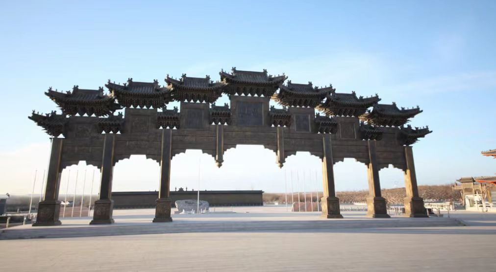

传奇：中华黄河坛位于宁夏回族自治区吴忠市青铜峡市青铜峡镇，坐落在黄河西岸，背靠贺兰山，面向黄河，是中国第一座以黄河为主题的大型文化纪念建筑群。黄河坛始建于2010年4月，2011年4月建成开放，占地面积4.5万平方米，建筑面积6.5万平方米，总投资2.6亿元。黄河坛采用明清建筑风格，以"黄河是中华民族的母亲河"为主题，通过坛、庙、碑、鼎、钟、鼓等建筑元素，展现黄河文化的深厚底蕴。黄河坛由思恩区、礼恩区、感恩区三大区域组成，包括牌楼、碑林大道、黄河坛、黄河钟、黄河鼓、黄河鼎、黄河楼等建筑，形成了一条完整的黄河文化展示轴线。黄河坛是集黄河文化展示、爱国主义教育、旅游观光、祭祀庆典等功能于一体的综合性文化旅游景区。
核心看点：
游览攻略：
交通信息：中华黄河坛位于吴忠市青铜峡市青铜峡镇。从银川出发：①旅游专线：银川旅游汽车站乘银川-青铜峡旅游专线，在黄河坛下车，车程1小时；②公交：银川南门乘302路到青铜峡市，转乘出租车；③自驾：经京藏高速到青铜峡出口，沿滨河大道行驶10公里。从吴忠出发：乘吴忠-青铜峡公交，在黄河坛下车。景区内有停车场。周边景点有青铜峡黄河大峡谷（5公里）、一百零八塔（3公里）、黄河楼景区（8公里）、沙坡头（150公里）。距银川河东机场60公里，车程1小时；距吴忠火车站20公里，车程30分钟。建议与青铜峡黄河大峡谷、一百零八塔、黄河楼组合游览。
建设背景：黄河是中华民族的母亲河，孕育了中华文明。但长期以来，中国没有一座专门祭祀黄河、展示黄河文化的大型建筑。2009年，宁夏回族自治区政府提出建设"中华黄河坛"的设想，得到国家支持。2010年4月28日，黄河坛奠基开工。2011年4月28日，黄河坛建成开放。黄河坛的建成，填补了中国黄河文化展示的空白，成为弘扬黄河文化、凝聚民族精神的重要载体。
设计理念：黄河坛的设计体现了深厚的文化内涵。①主题："黄河是中华民族的母亲河"；②布局：沿中轴线对称布局，体现庄严、肃穆；③数字：大量使用有文化内涵的数字，如3、6、9、12、36、56、99、108等；④元素：综合运用坛、庙、碑、鼎、钟、鼓等传统建筑元素；⑤风格：采用明清建筑风格，体现传统与现代的结合。设计理念是黄河文化精神的物化。
建设过程：黄河坛建设历时一年。①2010年4月28日，奠基开工；②2010年8月，主体建筑封顶；③2010年12月，内部装修完成；④2011年4月28日，建成开放。建设动用技术人员、工人3000余人，克服了工期紧、任务重、技术要求高等困难。黄河坛的建设体现了"宁夏速度"。
开坛大典：2011年4月28日，中华黄河坛举行开坛大典。全国政协副主席、国家有关部委领导、黄河流域9省区代表、海外侨胞代表等3000余人参加。大典包括祭祀黄河、撞钟祈福、文艺演出等活动。开坛大典的举行，标志着黄河坛正式向公众开放，成为黄河文化的新地标。
历届活动：黄河坛建成后，举办了多项重要活动。①每年清明节，举办黄河祭祀大典；②端午节，举办黄河文化节；③国庆节，举办黄河音乐会；④春节，举办黄河灯会。活动弘扬了黄河文化，丰富了群众文化生活。
社会影响：黄河坛的建成产生了广泛的社会影响。①文化影响：成为黄河文化的重要展示平台；②旅游影响：成为宁夏重要的旅游景点；③教育影响：成为爱国主义教育基地；④经济影响：带动了当地旅游经济发展。黄河坛是宁夏文化建设的标志性工程。
总体布局：黄河坛采用中国传统的中轴线对称布局。①轴线：南北中轴线，长1000米；②序列：牌楼→碑林大道→广场→钟、鼎→主坛→黄河楼；③分区：思恩区（入口）、礼恩区（广场）、感恩区（主坛）；④朝向：坐西朝东，面向黄河。布局体现了"天人合一"的思想。
建筑形式：黄河坛建筑形式多样。①坛：主坛为圆形三层石坛；②楼：黄河楼为九层木结构楼阁；③碑：碑林大道有108通石碑；④钟：黄河钟为铜钟；⑤鼎：黄河鼎为青铜鼎；⑥鼓：有黄河鼓。形式丰富，功能齐全。
主坛结构：主坛为黄河坛的核心建筑。①形制：仿天坛祈年殿，但规模更大；②层数：三层，代表天、地、人；③材料：汉白玉栏杆，青石坛身，琉璃瓦顶；④装饰：雕刻黄河文化图案，有龙、凤、水纹等。结构严谨，装饰精美。
黄河楼结构：黄河楼为仿古楼阁。①层数：九层，取"九五之尊"之意；②高度：66米，寓意"六六大顺"；③结构：木结构，有斗拱、飞檐；④功能：一层展览，二层观景，三层至九层为文化展示。楼阁雄伟，功能完善。
装饰艺术：黄河坛装饰丰富多彩。①石雕：栏杆、台阶、碑刻有精美石雕；②木雕：门窗、梁枋有精细木雕；③彩绘：梁、枋、檐有鲜艳彩绘；④铸铜：钟、鼎有精美铸铜纹饰。装饰体现了传统工艺水平。
建筑材料：黄河坛采用优质建筑材料。①石材：用汉白玉、青石、花岗岩；②木材：用松木、柏木、楠木；③金属：用铜、铁、铝；④琉璃：用琉璃瓦、琉璃构件。材料保证建筑的耐久性。
黄河文明：黄河流域是中华文明的发祥地。①旧石器时代：有西侯度、匼河等遗址；②新石器时代：有仰韶文化、龙山文化；③三代：夏、商、周均在黄河流域；④秦汉至明清：长安、洛阳、开封等古都均在黄河流域。黄河文明是中华文明的主干。
黄河精神：黄河孕育了伟大的民族精神。①自强不息：黄河奔流不息，象征中华民族的奋斗精神；②厚德载物：黄河滋养万物，象征中华民族的包容精神；③坚韧不拔：黄河冲破险阻，象征中华民族的坚强意志；④无私奉献：黄河润泽大地，象征中华民族的奉献精神。黄河精神是中华民族的精神象征。
黄河文学：黄河是文学创作的永恒主题。①诗歌：有《诗经》中的黄河诗篇，李白、王之涣、刘禹锡等的黄河诗；②散文：有《黄河赋》《河伯》等；③小说：有《黄河东流去》等；④歌曲：有《黄河大合唱》《黄河颂》等。黄河文学是中华文学的重要组成部分。
黄河艺术：黄河是艺术表现的重要题材。①绘画：有《清明上河图》《黄河万里图》等；②雕塑：有黄河主题雕塑；③音乐：有《黄河大合唱》等；④舞蹈：有黄河歌舞。黄河艺术是中华艺术的瑰宝。
黄河民俗：黄河流域有丰富的民俗文化。①祭祀：有祭河神、祭龙王等；②节庆：有黄河文化节、龙舟赛等；③饮食：有黄河鲤鱼、羊肉泡馍等；④工艺：有黄河石艺、剪纸等。黄河民俗是民间文化的体现。
黄河治理：中国人民与黄河的斗争贯穿历史。①古代：有大禹治水、王景治河等；②近代：有李仪祉、张含英等治黄专家；③现代：有三门峡、小浪底等水利工程；④当代：有黄河调水调沙、生态保护等。黄河治理体现了人水和谐的追求。
文化价值：黄河坛是黄河文化的集中展示。①象征价值：是黄河文化的物质象征；②教育价值：是爱国主义教育的基地；③艺术价值：是建筑、书法、雕塑等艺术的集成；④精神价值：是民族精神的凝聚。黄河坛是文化的"教科书"。
历史价值：黄河坛是新时代的文化创造。①时代价值：体现了21世纪初中国的文化自觉；②创新价值：是传统文化现代表达的创新；③记录价值：记录了黄河文化保护传承的实践；④标志价值：是宁夏文化建设的标志。黄河坛是历史的见证。
艺术价值：黄河坛是综合艺术的结晶。①建筑艺术：坛、楼、碑、钟、鼎等形式丰富；②书法艺术：碑林汇集了当代书法精品；③雕塑艺术：石雕、铜雕工艺精湛；④景观艺术：建筑与黄河、贺兰山和谐统一。黄河坛是"艺术的博物馆"。
社会价值：黄河坛在社会生活中发挥重要作用。①教育功能：开展爱国主义、黄河文化教育；②旅游功能：吸引游客，促进旅游发展；③活动功能：举办祭祀、节庆、演出等活动；④休闲功能：为市民提供休闲场所。黄河坛是社会的"精神家园"。
旅游价值：黄河坛是宁夏重要的旅游景点。①景观价值：建筑宏伟，黄河壮丽；②文化价值：黄河文化内容丰富；③体验价值：祭祀、撞钟、登楼等体验多样；④经济价值：带动旅游及相关产业发展。黄河坛是宁夏旅游的"新名片"。
保护与利用：黄河坛得到科学管理和合理利用。①管理机制：有专门的管理机构，负责保护、运营；②维护保养：定期对建筑、设施进行维护；③活动开展：举办多种文化活动，保持活力；④旅游开发：合理开展旅游，服务公众；⑤教育功能：开展青少年教育，传承文化；⑥社区参与：当地群众参与管理，分享收益。黄河坛的保护利用经验，为新建文化景观的管理提供了借鉴。